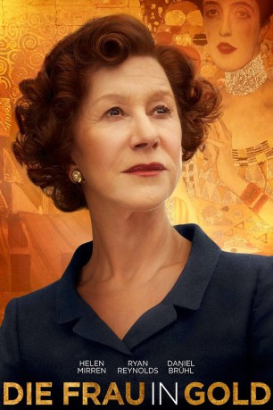

#2441 Die Frau in Gold
Alternativ: Woman in Gold
 
 IMDB-Wertung: 7.3 / 10
IMDB-Wertung: 7.3 / 10  Metascore: 51
Metascore: 51 
Gustav Bloch (Allan Corduner) und seine Großfamilie werden nach dem Einmarsch der Nationalsozialisten 1938 in Wien enteignet – die Nazis berauben die jüdische Familie ihrer Kunstsammlung und vertreiben sie aus der Stadt. Blochs Tochter Maria Altmann (Helen Mirren) wird in den USA ansässig. Gut 50 Jahre später beschließt sie, zurückzuholen, was rechtmäßig ihr gehört. Vor allem das wertvolle Gemälde „Goldene Adele“ will sie wieder in den Besitz ihrer Familie bringen. Auf dem Jugendstil-Porträt ist ihre Tante Adele (Antje Traue) abgebildet, verewigt vom berühmten Maler Gustav Klimt (Moritz Bleibtreu). Doch die Wiener Behörden, die das Gemälde mittlerweile im Schloss Belvedere haben ausstellen lassen, geben das Nazi-Raubgut nicht so leicht her. Maria Altmann wendet sich hilfesuchend an den Anwalt Randol Schoenberg (Ryan Reynolds), der einen langwierigen Prozess in Gang setzt…
Jahr: 2015
Dauer: 109 Minuten
FSK: 6
Land: England Studio: EuroVideoTonspuren: DTS - ,
Untertitel: Deutsch, Englisch,
Auflösung: 1080p (1920x808) Größe: 5048 MB
Genre: Drama
Regisseur: Simon Curtis
Drehbuch: Alexi Kaye Campbell, E. Randol Schoenberg, Maria Altmann
Soundtrack: Martin Phipps, Hans Zimmer
Darsteller:
 Helen Mirren als Maria Altmann
Helen Mirren als Maria Altmann Ryan Reynolds als Randy Schoenberg
Ryan Reynolds als Randy Schoenberg Daniel Brühl als Hubertus Czernin
Daniel Brühl als Hubertus Czernin Katie Holmes als Pam Schoenberg
Katie Holmes als Pam Schoenberg Tatiana Maslany als Young Maria Altmann
Tatiana Maslany als Young Maria Altmann Max Irons als Fritz Altmann
Max Irons als Fritz Altmann Charles Dance als Sherman
Charles Dance als Sherman Antje Traue als Adele Bloch-Bauer
Antje Traue als Adele Bloch-Bauer Elizabeth McGovern als Judge Florence Cooper
Elizabeth McGovern als Judge Florence Cooper Jonathan Pryce als Chief Justice Rehnquist
Jonathan Pryce als Chief Justice Rehnquist Frances Fisher als Barbara Schoenberg
Frances Fisher als Barbara Schoenberg Moritz Bleibtreu als Gustav Klimt
Moritz Bleibtreu als Gustav Klimt Tom Schilling als Heinrich
Tom Schilling als Heinrich Allan Corduner als Gustav Bloch-Bauer
Allan Corduner als Gustav Bloch-Bauer Henry Goodman als Ferdinand Bloch-Bauer
Henry Goodman als Ferdinand Bloch-Bauer- Alma Hasun als Luise
- Olivia Silhavy als Elisabeth Gehrer
 Ludger Pistor als Rudolph Wran
Ludger Pistor als Rudolph Wran Ben Miles als Ronald Lauder
Ben Miles als Ronald Lauder Rolf Saxon als Stan Gould
Rolf Saxon als Stan Gould Stephen Greif als Bergen
Stephen Greif als Bergen- Cornelia Ivancan als Anna the Mole
- Anthony Howell als Austrian Official
- Asli Bayram als Isa, Wran's Secretary
- Stephanie Schmiderer als Woman in Fur Coat
- Susi Stach als Woman in Courtyard
- William Brand als Herr Feldmann
 Erich Redman als Nazi Officer
Erich Redman als Nazi Officer Josh Becker als Herr Neumann
Josh Becker als Herr Neumann- Kenneth Jay als Ellis Island Officer
 Crystal Clarke als Bookshop Cashier
Crystal Clarke als Bookshop Cashier Nancy Crane als Mrs. Scheff
Nancy Crane als Mrs. Scheff- Joseph Mydell als Judge Clarence
 Eric Meyers als David Pike
Eric Meyers als David Pike Richard Alan Reid als Court Reporter
Richard Alan Reid als Court Reporter- Janina Blohm-Sievers als Consulate Receptionist
- Franziska Singer als Box Office Employee
- Nikolaus Barton als Rail Company Employee
- Simona Hughes als School Teacher
- Alexander Bruckner als Young Man , uncredited
 Alexander Cooper als Airport Staff Member , uncredited
Alexander Cooper als Airport Staff Member , uncredited- Tia Demir als Air Stewardess , uncredited
 Neve Gachev als Court Observer , uncredited
Neve Gachev als Court Observer , uncredited- Jasmine Golden als Hispanic Mom , uncredited
 Vera Horton als Pedestrian , uncredited
Vera Horton als Pedestrian , uncredited Bron James als Reporter , uncredited
Bron James als Reporter , uncredited- Wolf Morrison als Spectator , uncredited
- Helen Road als Courtroom Spectator , uncredited
- Nina Kunzendorf als Therese Bloch-Bauer
- Nellie Schilling als Child Maria
Datei: X:\2015(A-F)\Frau in Gold, Die (2015, FSK, 1920x808).mkv seit 10.11.2015
Festplatte: HD 2015(A-Z)
 Es gibt insgesamt 143 Filme in der Gruppe '2015(A-F)'
Es gibt insgesamt 143 Filme in der Gruppe '2015(A-F)'